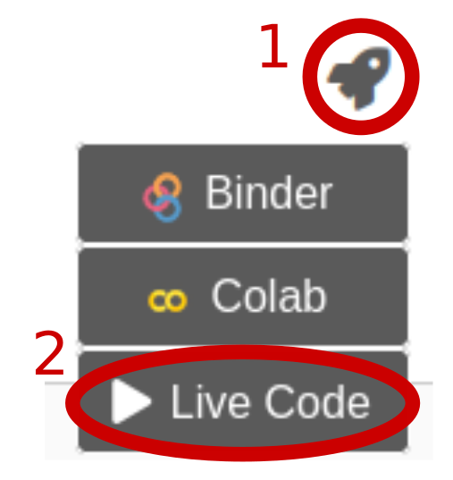

Introduction to Python#
The practical part of this book is built on python examples.
Yes, python is a programming language, and yes, we will write code. But you do not have to become a software developer to do predictive modelling, any more than you had to become one to run a mixed-effects model. If you have used R or Matlab, most of what follows will feel familiar — and the transition tends to be permanent.
This page is a crash course in the handful of language constructs that the rest of the book actually uses, plus an explanation of how to run the code yourself.
Running code#
The grey box below is a code cell: a place in the book where python code lives. It is not a picture of code — it is the code that produced the output printed underneath it.
print('Hello Python World!')
Hello Python World!
There are three ways to run a cell like this yourself, all reachable from the rocket icon () at the top of the page:
Live Code turns the cells on the current page into editable, runnable cells, right here in the book. Handy for small edits.
Binder opens the whole notebook in a cloud environment with all dependencies of this book pre-installed. Slower to start, but everything works.
Colab opens the notebook in Google Colab. Fastest to start; you may occasionally need to install a package yourself (see the note on the next page).
{kind=link}

Exercise 1.1
Change the message from 'Hello Python World!' to 'Hi there little snake!' and run your
modified code as Live Code.
Solution
print('Hi there little snake!')
Note that the text is enclosed in quotes. Single ('...') and double ("...") quotes are
interchangeable in python, as long as you do not mix them within one string.
Variables and types
Variables are created by assignment; there is no declaration step and no type annotation needed. Python figures out the type from the value.
age = 35.8 # a floating point number
n_subjects = 638 # an integer
region = 'superiorfrontal' # a string
is_cortical = True # a boolean
print(age, n_subjects, region, is_cortical)
print(type(age), type(n_subjects), type(region), type(is_cortical))
35.8 638 superiorfrontal True
<class 'float'> <class 'int'> <class 'str'> <class 'bool'>
Arithmetic works as expected. Note that / always gives a float, and ** is exponentiation
(not ^, which does something else entirely).
print(n_subjects / 2)
print(n_subjects // 2) # integer division
print(2 ** 10) # exponentiation
319.0
319
1024
Lists and indexing#
A list holds an ordered collection of things. Indexing starts at 0, and a range
a:b includes a but excludes b.
regions = ['bankssts', 'cuneus', 'entorhinal', 'fusiform', 'insula']
print(regions[0]) # first element
print(regions[-1]) # last element
print(regions[1:3]) # elements 1 and 2, but not 3
print(len(regions))
bankssts
insula
['cuneus', 'entorhinal']
5
Note
Zero-based indexing and half-open ranges look arbitrary at first (R and Matlab both start at 1),
but they make a lot of everyday code simpler: regions[:k] and regions[k:] split a list in
two without any off-by-one arithmetic, and their lengths are exactly k and len(regions) - k.
This convention matters in practice: a surprising share of analysis bugs are off-by-one errors
in how data is split, and we will split data a great deal in this book.
Loops and indentation#
Python has no end keyword and no braces. The body of a loop (or a function, or an if) is
marked by indentation, which forces the visual structure of the code to match its logic.
for r in regions:
if r.startswith('c'):
print(r, 'starts with a "c"')
else:
print(r)
bankssts
cuneus starts with a "c"
entorhinal
fusiform
insula
Functions#
You define your own function with def. Arguments can have default values, and — this is a
python habit worth adopting — you can pass arguments by name at the call site, which makes
code much easier to read months later.
def mean_absolute_error(y_true, y_predicted):
"""Average absolute difference between observed and predicted values."""
differences = [abs(t - p) for t, p in zip(y_true, y_predicted)]
return sum(differences) / len(differences)
observed = [35.8, 38.8, 46.7, 34.2]
predicted = [38.9, 38.9, 38.9, 38.9] # the mean of the observed values
print(mean_absolute_error(y_true=observed, y_predicted=predicted))
3.9250000000000007
That number — how far off we are on average — is the first performance measure we will meet properly in chapter 2, and it will follow us through the whole book.
The construct inside the function, [abs(t - p) for t, p in zip(...)], is a list comprehension:
a compact way of building a list by looping. You will see a few of these, but nothing more exotic.
Packages#
Very often you do not have to implement something yourself: it already exists in one of the many freely available python packages, collectively known as the python ecosystem. This book leans on a handful of them, all of which you will meet in due course:
package |
what we use it for |
|---|---|
numerical arrays and maths |
|
data frames: loading, slicing and summarizing tabular data |
|
plotting |
|
“classical” statistical models, with p-values |
|
predictive modelling and machine learning |
To use a package, you import it. It is conventional to give the most common ones a short alias:
import numpy as np
volumes = np.array([21210, 24651, 23804, 21001, 21865])
print('mean :', volumes.mean())
print('sd :', volumes.std(ddof=1))
print('z :', (volumes - volumes.mean()) / volumes.std(ddof=1))
mean : 22506.2
sd : 1631.054168321825
z : [-0.79470077 1.31497779 0.79568173 -0.92283876 -0.39311999]
Notice that the arithmetic in the last line was applied to all five values at once, without a loop. This is vectorization, and it is why numerical python is fast enough to be useful.
Exercise 1.2
Write a function rmse(y_true, y_predicted) that returns the root mean squared error instead of
the mean absolute error, and check it against the numbers used above.
Solution
import numpy as np
def rmse(y_true, y_predicted):
y_true, y_predicted = np.array(y_true), np.array(y_predicted)
return np.sqrt(np.mean((y_true - y_predicted) ** 2))
print(rmse(observed, predicted))
The RMSE is always at least as large as the MAE, and the gap between them grows when a few predictions are badly wrong — squaring punishes large errors disproportionately. We will come back to the choice between them in chapter 2.
Installing packages
On your own computer, packages are installed with pip or conda, for example:
pip install -r requirements.txt
using the requirements.txt
file of this book, which lists the versions everything was tested with.
Now that we can run code, let’s get some data into it.
Exercise 1.3
Open this page in Colab (rocket icon → Colab), add a new cell at the bottom, and compute how many years of your own life have passed since you started reading this book. You should end up with a number that is very close to zero.